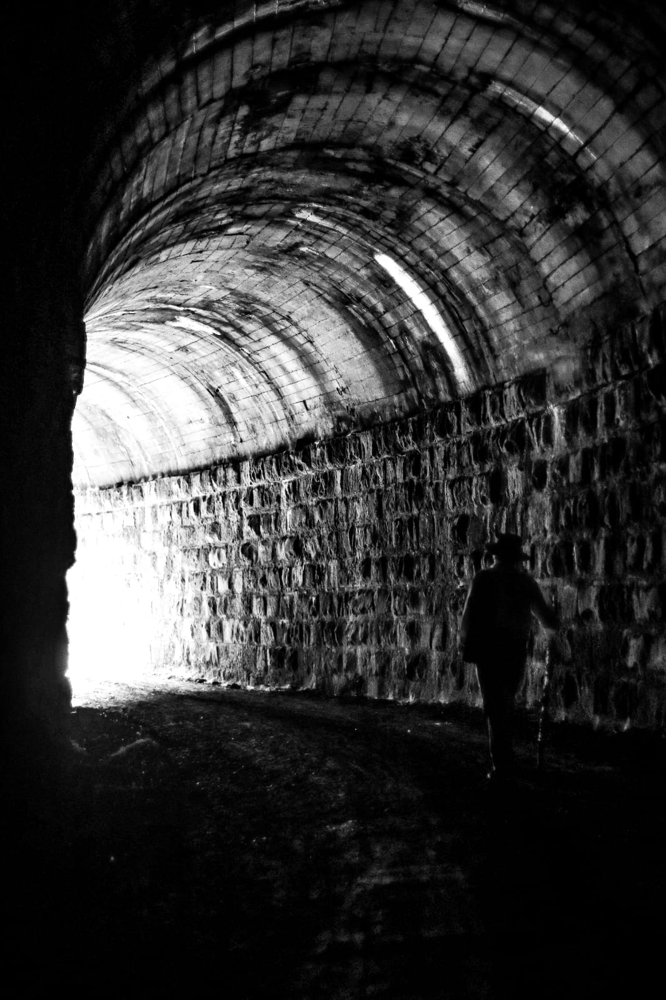

Bienvenidos a esta edición digital de una de las numerosas obras de la escritora colombiana Soledad Acosta de Samper (1833–1913).
Esta edición digital bilingüe de Luz y sombra fue realizada en el marco del Máster en Humanidades Digitales, especialidad Ediciones digitales, en la Université de Rouen Normandie (2023–2025), bajo la dirección de Laurence Macé.
Concebida como un laboratorio editorial, propone una lectura en paralelo del texto original en español y su traducción al francés, acompañada de anotaciones, visualizaciones y herramientas interactivas.
Inicialmente basada en la edición impresa de 1869, la investigación se amplió posteriormente con el hallazgo de un manuscrito conservado en el Instituto Caro y Cuervo. Esta superposición de fuentes abrió una reflexión sobre la génesis editorial de la obra, actualmente prolongada en un proyecto doctoral.
La presente edición constituye así un espacio experimental donde convergen texto, tecnología e historia literaria.
Soyez les bienvenus à cette édition numérique d’une des nombreuses œuvres de l’écrivaine colombienne Soledad Acosta de Samper (1833–1913).
Cette édition numérique bilingue de Luz y sombra a été réalisée dans le cadre du Master Humanités numériques, spécialité Éditions numériques à l’Université de Rouen Normandie (2023–2025), sous la direction de Laurence Macé.
Conçue comme un laboratoire éditorial, elle propose une mise en regard du texte espagnol et de sa traduction française, enrichie d’annotations, de visualisations et d’outils interactifs.
Initialement fondée sur l’édition imprimée de 1869, la recherche s’est ensuite élargie à la découverte d’un manuscrit conservé à l’Instituto Caro y Cuervo. Cette stratification des sources a ouvert une réflexion sur la genèse éditoriale de l’œuvre.
Cette édition constitue ainsi un chantier expérimental : un espace de recherche, d’exploration et de dialogue entre texte, technologie et histoire littéraire.